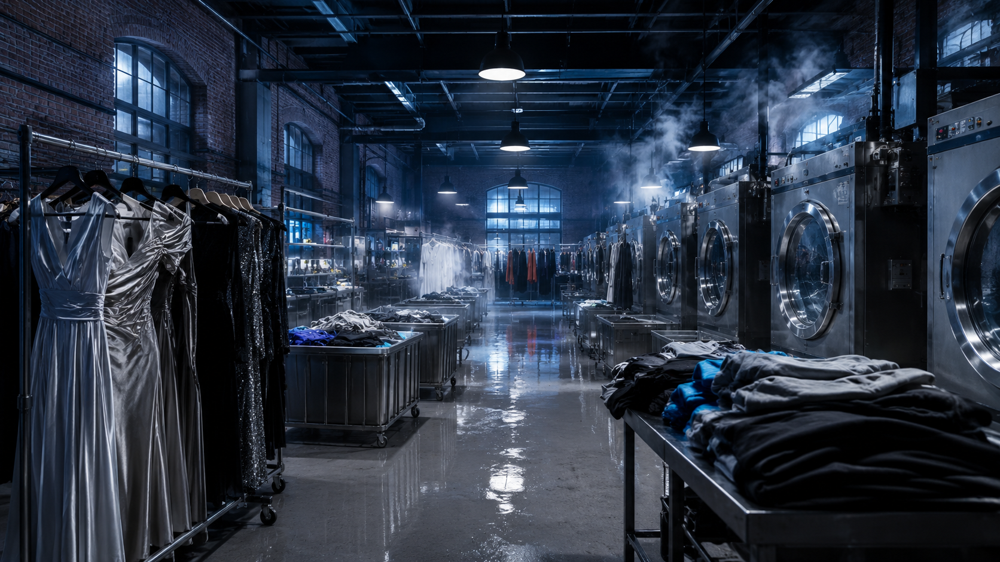
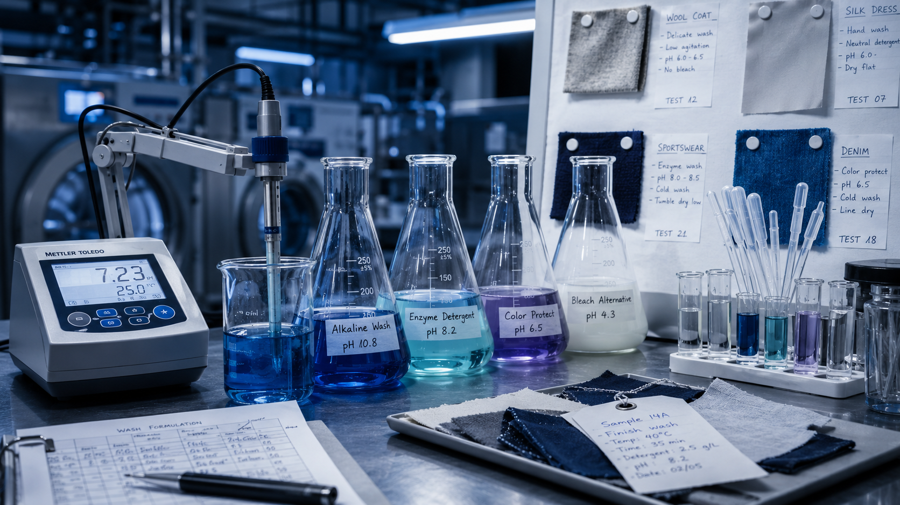
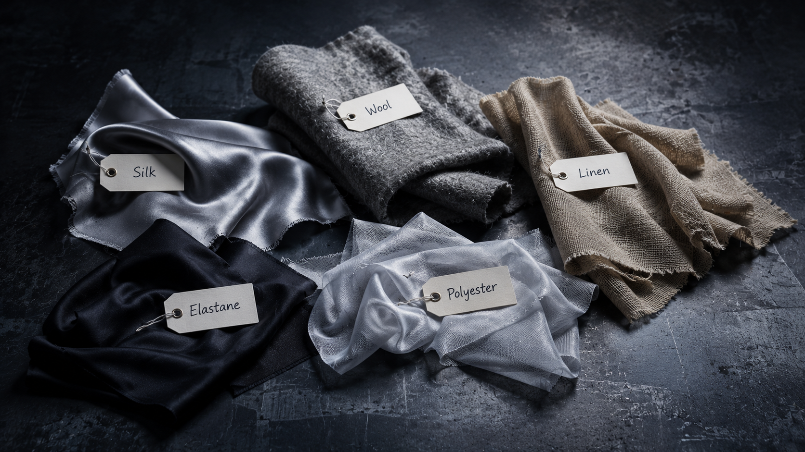
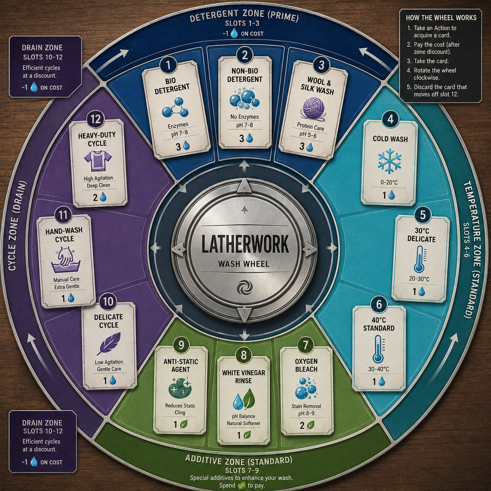
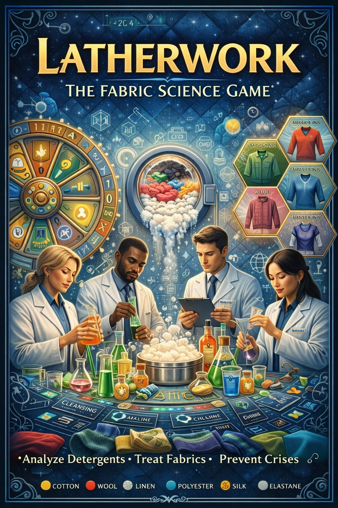
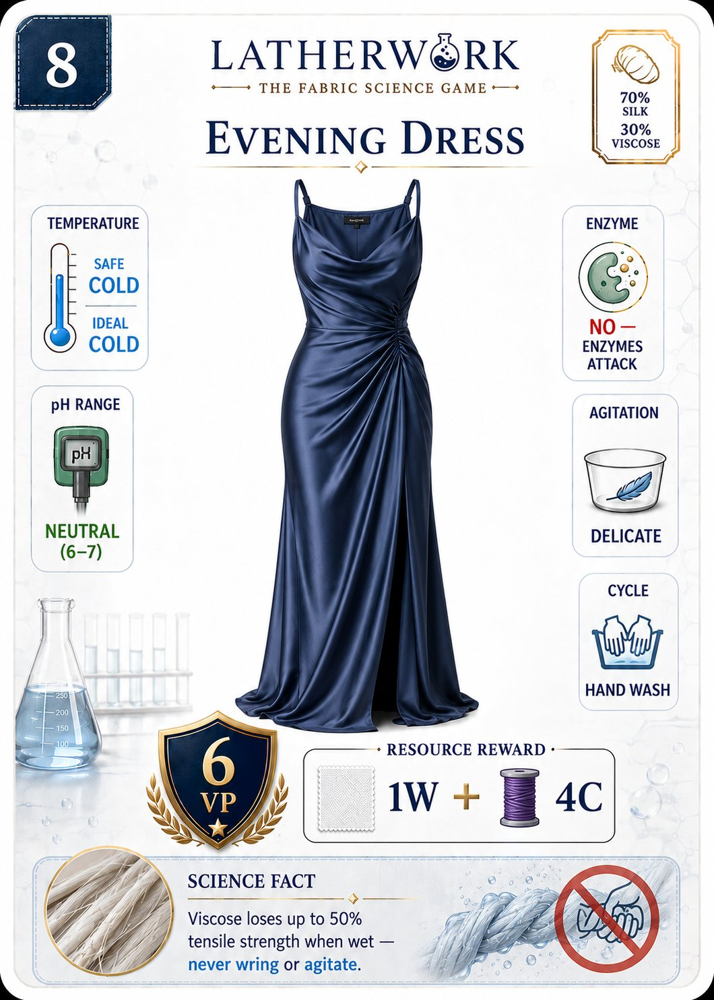

The Fabric Science Game
"Every garment that arrives has a secret. The wrong temperature destroys silk. The wrong pH felts wool. Your job is to read the chemistry — and wash it perfectly."
Latherwork is a strategic card-deck-building eurogame set in a high-end industrial fashion laundry. Build precise wash formulas using real textile chemistry. Compete through the rotating Wash Wheel market. Survive Crisis Events that disrupt everything.

The idea began with a carpet. Mehrad was trying to wash a small rug at home and had no idea what the right approach was. He picked up the care label — and found a world he hadn't noticed before. Temperature ranges. pH requirements. Agitation warnings. Enzyme compatibility. A whole science encoded in tiny symbols that most people ignore entirely.
"What if people understood this?" he thought. Not just "wash cold" — but why. Why does viscose lose 50% of its tensile strength when wet? Why do enzymes attack the protein structure of wool? Why does chlorine bleach destroy elastane permanently? These aren't arbitrary rules. They're chemistry.
The deeper message of Latherwork is sustainability: when you understand how to care for your garments correctly, they last longer — reducing the over-consumption and fast-fashion cycles that make textile waste one of the world's largest environmental problems.
Latherwork is the only strategy game about the science of textile care. It can partner with detergent brands, fashion houses, and sustainability organisations — and belongs in every school that teaches domestic science, chemistry, or environmental studies.
Your players' lab boards represent specialist textile care operations in a high-end fashion warehouse — think Savile Row meets industrial chemistry. Silk evening gowns hang beside sportswear. Steel drums steam beside pH meters. Every garment that arrives is a puzzle.
The Wash Wheel — the central rotating card market — is the game's beating heart. Detergents, temperatures, additives, and wash cycles rotate clockwise through twelve positions, creating a constantly shifting economy. Prime Zone cards cost less. Drain Zone cards fall off the wheel if nobody takes them in time.
Timing the wheel is as important as knowing your fabric chemistry.
Every garment in Latherwork has a precise chemical profile — a fibre composition that determines exactly how it must be washed. Temperature, pH, detergent type, agitation level, and wash cycle all interact in ways that real textile science has established over decades. Get it wrong and the garment is damaged. Get it right and you score — and learn something that stays with you long after the game ends.
Each fibre type responds differently to heat. The right temperature range depends on the dominant fibre — and minority fibres can restrict your options further.
Some fibres tolerate alkaline conditions. Others require strict neutral or acidic chemistry. Choosing the wrong detergent class can cause irreversible damage.
Mechanical agitation that cleans cotton efficiently can permanently distort delicate fibres. The right cycle is as important as the right chemistry.
Every player receives a reference card. The science is on it. Learning to read it — and apply it faster than your opponents — is the game.

30 Garment Mission Cards — each with a real fibre composition. An Evening Dress (70% Silk, 30% Viscose). Sports Leggings (78% Polyester, 22% Elastane). Every card is a science puzzle with real chemical stakes.
An unexpected event hits the market. Crisis cards disrupt the shared economy in different ways each round — forcing every player to adapt their strategy on the fly.
Take one action — acquire from the Wash Wheel, submit your formula, develop your lab, or advance your research. Every choice shapes what's available to everyone else.
Build and submit your wash formula against a garment. Science-backed precision is rewarded. A correct formula scores VP. An incorrect one doesn't — and wastes your resources.
The round closes. The market shifts. Time moves forward. When the garment pile runs low, the final round begins — and scoring becomes everything.

12 slots. 4 zones. Constantly rotating. The Wash Wheel is the shared card market — and the engine of competition. Prime Zone (slots 1–3) offers discounts. Standard Zone is full price. Drain Zone (slots 10–12) gives discounts but cards fall off if no one claims them.
Every player who passes their turn rotates the wheel one extra position — a gift to competitors, but sometimes the only way to generate resources. Reading the wheel is as important as reading your fabric chemistry.
The four card types — Detergent, Temperature, Additive, Cycle — each have their own Supply Stack. When a card falls off the wheel, it is replaced immediately.
Once per round: swap any card in your Formula Slot with one from your Holding Rack without paying tokens.
Once per round: gain 1 Care Token whenever you complete a garment at 30°C or below. Rewards sustainable play.
Once per round: complete a garment for a researched fibre type without needing a Cycle card at all.
Once per round: acquire any one card from the Wash Wheel at zero cost into your Holding Rack slot.


Latherwork can partner with detergent brands, luxury fashion houses, and sustainable textile companies — a natural co-branding opportunity that extends the game's reach far beyond the hobby.
Clothes that are washed correctly last longer — reducing the overconsumption that drives fast fashion. Latherwork embeds this lesson in every game action, making sustainability tangible and personal.
Textile science, polymer chemistry, pH chemistry — Latherwork covers real GCSE and A-level chemistry content in a format students will remember. Ideal for school and domestic science curricula.
No other game uses textile chemistry as a core mechanic. Latherwork is completely novel — and occupies a category that has massive crossover appeal beyond traditional board game audiences.
Core concept locked. Mechanics design in progress. Follow us for development updates.
Follow Latherwork Development →